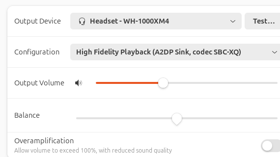

Kõrvaklapid olid väljundiks valitud, aga heli polnud
25. novembri öösel kell 00.29 kirjutas kasutaja Sony WH-1000XM4 kohta: „Kuulda pole midagi”. Ubuntu helisätetes oli valitud õige nimega väljund, ent see ei kinnitanud kuuldavat heli.
- Vaates Settings → Sound → Output Device oli Headset – WH-1000XM4.
- Configuration näitas High Fidelity Playback (A2DP Sink, codec SBC-XQ); helitugevuse liugur ei olnud nullis.
- Teisel samal ajal saadetud pildil oli automaatühenduse teade Sony ühendamisest TP-Linkiga. Kasutaja kuuldava heli kontroll jäi negatiivseks.

Soovitatud, katsetamata: määrata kõrvaklapid vaikeväljundiks, eemaldada vaigistus ja suunata aktiivsed helivood sinna. Täielikku käsuplokki ei õnnestunud algvestluse otsingust taastada; seda ei ole siin välja mõeldud. Kasutaja kinnitust heli taastumisest ei leitud. Seis: lahendamata.